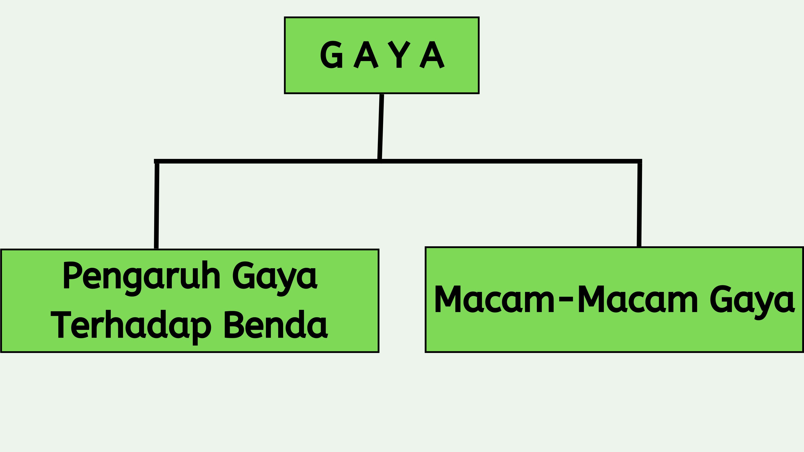

MEDIA
Media Pembelajaran ini dibuat untuk memenuhi persyaratan dalam
menyelesaikan Program Strata-1 Prodi dengan judul tugas akhir :
"Gaya"
| Nama | : | M. Nor Alfisyahrin Frdaus |
| Dosen Pembimbing 1 | : | Dr. R. Ati Sukmawati, M. Kom. |
| Dosen Pembimbing 2 | : | Novan Alkaf Bahraini Saputra, S.Kom., M.T |
| Program Studi | : | Pendidikan Komputer |
| Fakultas | : | Keguruan ilmu Pendidikan |
| Universitas | : | Universitas Lambung Mangkurat |
Daftar Pustaka
Devi, P. K., & Anggraeni, S. (2008). Ilmu Pengetahuan Alam: Untuk SD/MI kelas IV. Jakarta: Pusat Perbukuan, Departemen Pendidikan Nasional .
Erlangga. (2012). sains Jilid 5. Jakarta: PT. Gelora Askara Pertama.
Hadiat. (2004). Sains Jilid 5. Jakarta: Balai Pustaka.
Kebudayaan, K. P. (2017). Aktif Bergerak Ilmu Pengetahuan Alam (IPA) PAKETA SETARA SD/MI TINGKAT 2. In Modul Tema 3. Jakarta.
Kholil, M., & Frowida, D. (2009). ILMU PENGETAHUAN ALAM 5 : Untuk SD/MI Kelas V. Jakarta: Pusat Perbukuan, Departemen Pendidikan Nasional.
Rosnawati, S, Aris, & M. (2008). Senang Belajar Ilmu Pengetahuan Kelas 4. Jakarta: Pusat Perbukuan Depdiknas.
Susilowati, E., & Wiyanto. (2010). Ilmu Pengetahuan Alam 4. Jakarta: Pusat Perbukuan, Kementerian Pendidikan Nasional.
Yudhistira. (2006). Jelajah IPA. Jakarta: Ghalia Indonesia.
Petunjuk APlikasi
Gambar di bawah ini adalah tampilan pada halaman materi.

Keterangan :
-
Nomor 1 adalah sidebar. Sidebar adalah salah satu bentuk navigasi yang terdapat pada media pembelajaran ini. Sidebar memiliki fungsi yang sama seperti daftar isi pada sebuah buku. Dengan sidebar, pengguna dapat melakukan perpindahan antar sub bab.
-
Nomor 2 adalah konten. Konten di sebelah kiri memuat materi statistika, sedangkan konten di sebelah kanan adalah konten pendukung yang memuat contoh soal serta pertanyaan.
-
Nomor 3 adalah deretan tombol navigasi yang bersifat linear. Tombol navigasi ini berfungsi untuk berpindah ke halaman sebelum atau sesudah, serta berfungsi untuk melakukan perpindahan halaman pada sub bab yang sama
Peta Konsep
